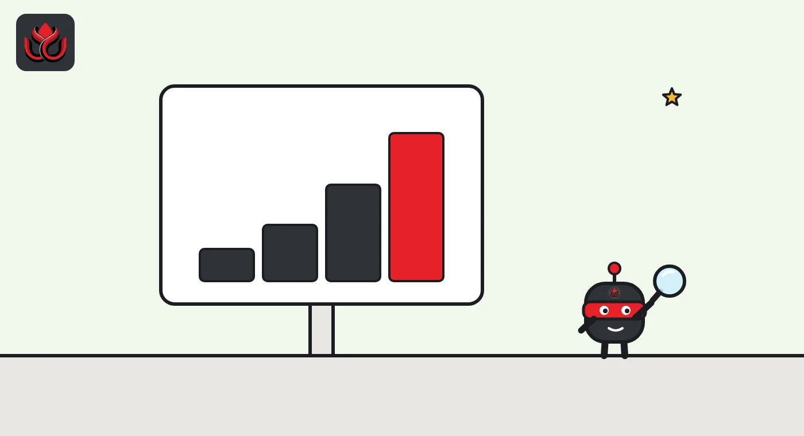
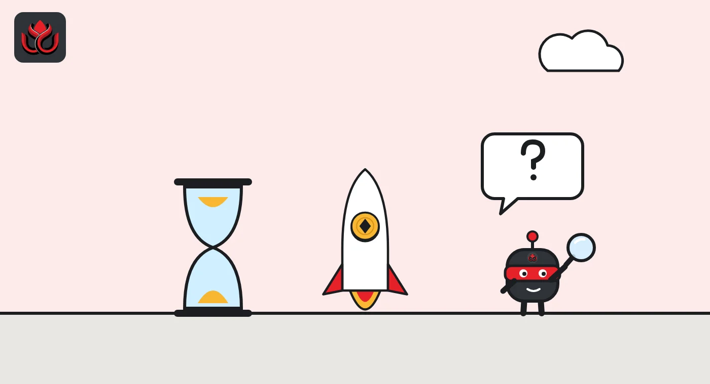

Ethereum roadmap explained: Pectra, Fusaka and why Glamsterdam has no date
Ethereum upgrades through named hard forks. Pectra went live on May 7, 2025, and Fusaka on December 3, 2025. Glamsterdam, the next one, is live on the Sepolia testnet but was pulled from Hoodi in October 2026, and as of November 2, 2026, it has no mainnet date.
Key points
- Ethereum.org calls the roadmap "a set of intentions": goals such as cheaper transactions, security, user experience and privacy, delivered through named upgrades.
- Pectra (May 7, 2025) let regular wallets act like smart contract wallets and raised the validator balance cap to 2,048 ETH.
- Fusaka (December 3, 2025) added PeerDAS for cheaper rollup data, raised the default gas limit to 60 million and allowed small blob-only forks.
- Glamsterdam activated on Sepolia on October 6, 2026, but its Hoodi testnet date was canceled on October 22. No mainnet date is set as of November 2, 2026.
- Hegotá is planned next, listed for 2027, with inclusion lists and new transaction types under discussion.
What is the Ethereum roadmap?
Ethereum has no single company that ships updates. Its developers, researchers and client teams agree on changes at public calls, then bundle them into hard forks, upgrades that every node must run. Ethereum.org describes the roadmap as "a set of intentions for improving Ethereum" and groups the goals into cheaper transactions, better security, better user experience and privacy, with longer-term future-proofing work (things like post-quantum security and statelessness, which may be years away).
Upgrade names join two halves: one for the execution layer, where transactions run, and one for the consensus layer, where validators agree. Glamsterdam, for example, combines Amsterdam on the execution side and Gloas on the consensus side, per the Ethereum Foundation (EF). The full Glamsterdam list in the EF's testnet post runs to 18 EIPs. The EF blog publishes a formal announcement with dates and client versions before each activation.
Which upgrades came before Pectra?
Paris (The Merge): Ethereum moves from proof of work to proof of stake.
Shapella: staked ETH can be withdrawn.
Dencun: proto-danksharding (EIP-4844) adds blobs, cheap data space for rollups.
Pectra: smart wallet features for regular accounts, 2,048 ETH validator cap.
Fusaka: PeerDAS, 60 million default gas limit, BPO forks.
Glamsterdam activates on the Sepolia testnet.
Glamsterdam's Hoodi date is canceled; no new date set.

What did Pectra change?
Pectra went live on May 7, 2025, according to the ethereum.org timeline. It did three main things:
- Let regular wallets (externally owned accounts) use smart contract features such as batching transactions, having someone else pay gas and better recovery options.
- Raised the maximum effective balance per validator from 32 ETH to 2,048 ETH, so large stakers can run fewer, bigger validators.
- Raised the blob target to 6 per block, with a maximum of 9. Blobs are cheap data space that layer 2 rollups buy to post their transactions.
What did Fusaka change?
Fusaka activated on December 3, 2025, at 4:49 p.m. ET, at epoch 411,392, according to the EF's mainnet announcement. Its headline was PeerDAS (EIP-7594), which lets nodes check that blob data is available by sampling small pieces instead of downloading every blob. That makes room for many more blobs without forcing every node to carry them all.
Fusaka also introduced Blob Parameter Only (BPO) forks: small upgrades that change only blob limits. The first two were already scheduled. BPO1 on December 9, 2025, raised the blob target and maximum to 10 and 15, and BPO2 on January 7, 2026, raised them to 14 and 21.
Other changes: the default gas limit went to 60 million (EIP-7935), a single transaction was capped at 16,777,216 gas (EIP-7825), and a new precompile supports secp256r1 signatures (EIP-7951), the kind produced by phone secure chips and passkeys.
Ethereum blob target per block after each upgrade
blobs per block
Sources: ethereum.org roadmap, EF Fusaka mainnet announcement

What is Glamsterdam and when is it coming?
Glamsterdam is the next upgrade. Its two headline changes, per the EF's testnet announcement, are:
- ePBS (EIP-7732): enshrined proposer-builder separation. Validators can outsource building blocks to specialist builders inside the protocol, instead of relying on outside middleware.
- Block-level access lists (EIP-7928): each block lists the accounts and storage it touches, so clients can load data and check transactions in parallel.
It also reprices gas. EIP-8037 raises and separately meters the cost of creating new state, and EIP-8038 updates the cost of reading state. Smaller items include a log for every ETH transfer (EIP-7708), a larger maximum contract size (EIP-7954), a SLOTNUM opcode so contracts can read the current slot (EIP-7843), a standard factory for deploying contracts at predictable addresses (EIP-7997), a rule that keeps slashed validators from proposing blocks (EIP-8045) and faster processing of validator exits and consolidations (EIP-8061).
Gas limits are part of the story too. The EF's testnet post says the Prysm 7.2.0 and Teku 26.9.1 clients default to a 60 million gas limit after activation, and validators who want to propose with 200 million must set it themselves. The canceled Hoodi plan would have raised that testnet's limit to 200 million.
Status as of November 2, 2026: Glamsterdam activated on the Sepolia testnet on October 6, 2026. The EF then scheduled it for Hoodi, the last testnet before mainnet, on October 26. On October 22, developers postponed Hoodi to study how EIP-8037 interacts with contracts already on mainnet. The EF wrote: "A new activation date has not been set." LC Insight covered the delay here.
The schedule has slipped before. The EF's 2026 priorities post in February targeted the first half of 2026. Ethereum.org now lists Q4 2026, and that depends on Hoodi going smoothly.
What comes after Glamsterdam?
Ethereum.org lists Hegotá for 2027, with its scope not final. Two leading ideas are fork-choice enforced inclusion lists (FOCIL), where a committee of validators can force valid transactions into blocks to resist censorship, and frame transactions, which let accounts set their own validity rules. Ethereum.org says those could enable social recovery, spending limits, sponsored gas and a path to post-quantum signatures.
The EF's protocol work now runs in three tracks: Scale, Improve UX and a new Harden the L1 track for security and resilience. The stated goal is to keep raising the gas limit from 60 million "toward and beyond 100M."
Some items sit much further out. Ethereum.org says lower-priority upgrades such as quantum resistance are likely five to 10 years away, and that precise timing for any upgrade is hard to predict. Single-slot finality, zkEVMs (proving Ethereum blocks with zero-knowledge proofs), statelessness and full danksharding all appear under future-proofing without dates.
Do ETH holders need to do anything?
No. For Glamsterdam, the EF says mainnet users and ETH holders need to take no action. Node operators must update both their execution and consensus clients before each activation, and validators must update their beacon node and validator client.
LC Insight analysis
This section is our reading of the facts above, not a statement of fact.
- We think gas repricing is now the hardest part of Ethereum upgrades. Raising costs to protect node operators can break contracts written under old prices, which is exactly what stopped Glamsterdam on Hoodi.
- The likely result is that Glamsterdam's mainnet date slides further, since Hoodi must run cleanly first. A Q4 2026 mainnet now looks tight.
- Fusaka's BPO forks were the quiet win: blob capacity more than doubled in two steps without a full hard fork.
What's next
- A new Hoodi date for Glamsterdam on an All Core Devs call or the EF blog.
- Any change to EIP-8037 that comes out of the contract review.
- Further BPO forks to raise blob limits.
- Final scope decisions for Hegotá.
Frequently asked questions
When is Glamsterdam going live on mainnet?
No date is set as of November 2, 2026. The Hoodi testnet activation was postponed on October 22, and mainnet comes after Hoodi.
What is a BPO fork?
A Blob Parameter Only fork changes only the number of blobs per block. Fusaka introduced them so blob capacity can rise between major upgrades.
What is the current Ethereum gas limit?
The EF said in February 2026 that the mainnet gas limit was 60 million, up from 30 million, with a goal of going toward and beyond 100 million.
Did Ethereum drop sharding?
Ethereum.org says sharding left the roadmap because layer 2 rollups scaled faster than expected. Blob scaling through PeerDAS serves rollups instead.
Disclaimer. This article is based on public information and the sources listed below as of the update time shown. It is for information only and is not investment, legal or tax advice. Figures may change as companies and authorities publish new data.
Sources
- Ethereum.org, Ethereum roadmap (checked November 2, 2026)
- Ethereum Foundation, Fusaka Mainnet Announcement (November 6, 2025)
- Ethereum Foundation, Glamsterdam Testnet Announcement (September 2026)
- Ethereum Foundation, Glamsterdam on Hoodi Postponed (October 22, 2026)
- Ethereum Foundation, Protocol Priorities Update for 2026 (February 18, 2026)